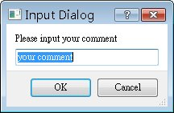
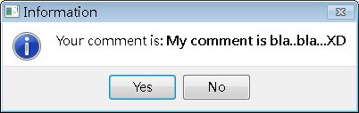
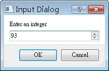
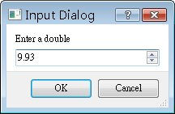
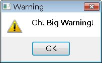
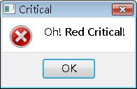
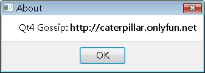
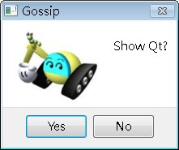
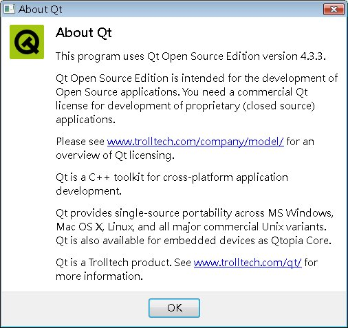

| 在程式中常出現一些簡單的對話或訊息方塊，在這邊介紹的QInputDialog與QMessageBox算是最常見的類型，它們的使用非常簡單，首先看個簡單的程式碼片段： bool isOK;
QString text = QInputDialog::getText(parent, "Input Dialog", "Please input your comment", QLineEdit::Normal, "your comment", &isOK); if(isOK) { QMessageBox::information(parent, "Information", "Your comment is: <b>" + text + "</b>", QMessageBox::Yes | QMessageBox::No, QMessageBox::Yes); } 在這個程式片中，QInputDialog使用getText()方法來取得使用者輸入字串，然後使用QMessageBox 來顯示輸入的字串；QInputDialog若取得輸入，會把isOK中設定為true，由此可判斷使用者是否有輸入，QMessageBox可以使用一 些基本的html語法來設定文字的顯示，訊息方塊將顯示Yes與No兩個按鈕，在組合時的列舉值是StandButton 列舉（enum）值，可以參考線上文件的表格 進行對照。最後一個參數設定預設按鈕是Yes，至於每個字串的設定各是何作用，直接看執行結果比較清 楚，以下顯示的是輸入方塊：  以下是按下OK後顯示訊息方塊：  以下再介紹一些對話與訊息方塊的樣式。設定預設值為0，下界為0，上界為100，遞增值為1的整數輸入對話方塊 ： int input = QInputDialog::getInteger(parent, "Input Dialog",
"Enter an integer", 0, 0, 100, 1, &isOK);  設定預設值為0，下界為0，上界為10，小數位數為2位的浮點數輸入對話方塊： double input = QInputDialog::getDouble(parent, "Input Dialog",
"Enter a double", 0.0, 0.0, 10.0, 2, &isOK);  一個警示訊息方塊： QMessageBox::warning(parent, "Warning",
"Oh! <b>Big Warning!</b>", QMessageBox::Yes, QMessageBox::Yes);  一個禁止訊息方塊： QMessageBox::critical(parent, "Critical",
"Oh! <b>Red Critical!</b>", QMessageBox::Ok, QMessageBox::Ok);  一個「關於..」訊息方塊，常用於程式簡介： QMessageBox::about(parent, "About",
"Qt4 Gossip: <b>http://caterpillar.onlyfun.net</b>");  訊息方塊的傳回值是根據您按下的按鈕，由左而右依序傳回StandButton 列舉（enum）值，可以參考線上文件的表格 進行對照。 您也可以自訂訊息方塊的圖示、按鈕等選項，以下是一個簡單的示範： QMessageBox message(QMessageBox::NoIcon, "Gossip",
"Show Qt?", QMessageBox::Yes | QMessageBox::No , parent); message.setIconPixmap(QPixmap("caterpillar.png")); if(message.exec() == QMessageBox::Yes) { QMessageBox::aboutQt(parent, "About Qt"); } 這個程式設定前兩個按鈕分別為Yes與No顯示與功能，程式中先不設定ICON，而使用setIconPixmap()設定自製的圖檔為圖示，QPixmap支援的圖檔包括BMP、GIF、JPG、PNG等格式（可在 QPixmap 文件中查詢）：  如果按下的是Yes鈕，則顯示Qt版權等相關訊息，這是aboutQt所作的事，以下為執行的畫面：  |